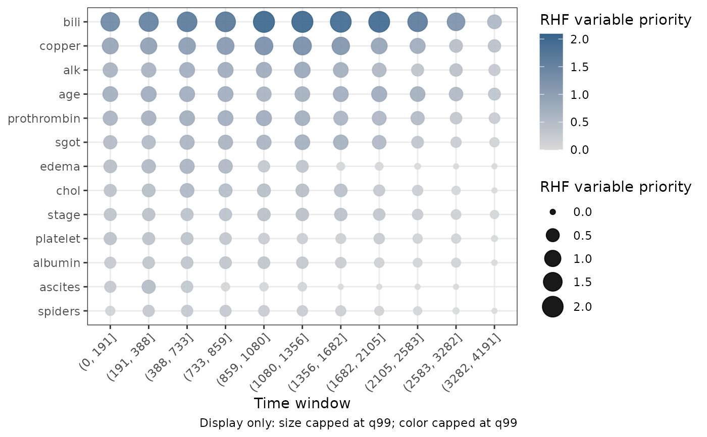

Plot Random Hazard Forest variable priority over time
Source:R/plot.gg_rhf_importance.R
plot.gg_rhf_importance.RdDraws a point matrix from a gg_rhf_importance() object. Each row is a
variable, each column is a time window, and point size and color carry the
time-localized RHF variable-priority score.
Arguments
- x
A
gg_rhf_importanceobject fromgg_rhf_importance().- vars
Optional nonempty character vector of variables to display. Unknown names are an error. When supplied, this takes precedence over
top_n_union.- top_n_union
NULLor one positive integer. WhenvarsisNULL, each time window contributes this many leading variables and the plot displays their union.NULLdisplays every variable.- transform
Display transformation:
"none"(default) or"log10", which useslog10(priority + 1). The returned extractor object is never changed.- size_cap, color_cap
One numeric value in
(0, 1]. Point size and color are capped at these quantiles of the finite display values. A value of1applies no cap.- display_note
Logical; if
TRUE, an applied size or color cap is reported in the caption.- ...
Additional arguments passed to
ggplot2::geom_point().
Details
Variables retain the global q90 ordering prepared by
gg_rhf_importance(), with the highest-ranked variable at the top. Time
windows remain chronological. This follows the variable-priority matrix in
Ishwaran et al. (2026) while returning a ggplot object you can extend.
The transformation and caps affect display values only. The priority
column in x remains on the upstream scale. A zero priority is drawn at the
minimum point size; missing priorities are not drawn. If variable filtering
leaves no finite values, the method stops rather than returning an empty
plot.
References
Ishwaran H, Hsich EM, Kogalur UB, Lee DKK (2026). Random Hazard Forests. arXiv:2608.21597. doi:10.48550/arXiv.2608.21597 .
Examples
# \donttest{
if (requireNamespace("randomForestRHF", quietly = TRUE)) {
data(pbc, package = "randomForestSRC")
d <- randomForestRHF::convert.counting(
survival::Surv(days, status) ~ ., na.omit(pbc))
o <- randomForestRHF::rhf(
"Surv(id, start, stop, event) ~ .", d, ntree = 30)
priority_fit <- randomForestRHF::importance.rhf(o)
priority <- gg_rhf_importance(o, importance_fit = priority_fit)
plot(priority, top_n_union = 10)
}

# }